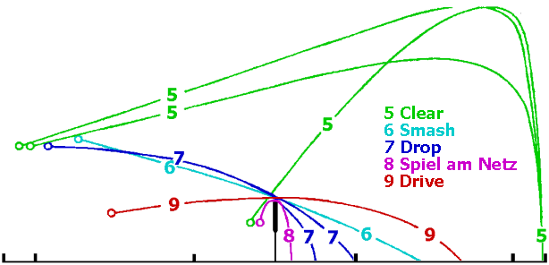
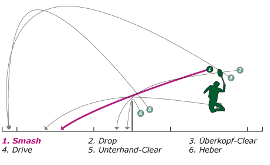

Wöchentliche Info-Reihe
rund um den Sport
Badminton

Überblick
- Teil 1 - Schlagarten
- 1.1 Drop
- 1.1.1 Drop-Stoppball
- 1.1.2 Langsamer Drop
- 1.1.3 Geschnittener Drop
- 1.1.4 Schneller Drop
- 1.1.5 Gewischter Drop
- 1.1.6 YongBo-Drop
- 1.2 Smash
- 1.3 Clear
- 1.3.1 Angriffs-Clear
- 1.3.2 Verteidigungs-Clear
- 1.3.3 Überkopf-Clear
- 1.3.4 Unterhand-Clear
- 1.3.5 Lob/Swip
- 1.4 Drive
- 1.5 Töten am Netz
- 1.6 Heber (auch Netzdrop/"Spiel am Netz")
- 1.A Schlagarten - Überblick
- 1.B Schlagarten - Im Detail
- Teil 2
- Teil 3
- Glossar
Woche 1
Teil 1 der Reihe: Schlagarten
- 1.1 Drop
kurzer Ball hinters Netz. Einen Drop spielt man, um den Gegner zu hetzen, und wenn man selber Zeit hat zu platzieren, weil der Gegner diesen Ball relativ schnell zurückspielen muss.
Drop-Varianten
- 1.1.1 Drop-Stoppball
- 1.1.2 Langsamer Drop
- 1.1.3 Geschnittener Drop
- 1.1.4 Schneller Drop
- 1.1.5 Gewischter Drop
- 1.1.6 YongBo-Drop
Beim Drop wird der Ball möglichst knapp hinter das Netz gespielt mit dem Ziel, den Gegner aus seiner Grundstellung heraus zu bewegen und damit weitere Angriffsschläge vorzubereiten. Dabei ist es möglich, den Ball aus dem Hinterfeld nach unten zu spielen oder direkt am Netz wieder kurz zu beantworten.
Der Langsame Drop wird weicher geschlagen als der Schnelle Drop. Die Flugbahn ist dadurch kurvenförmiger. D.h. er fällt näher hinter dem Netz herunter.
Bei geschnittenen Drops ähnelt die Schlagbewegung sehr stark einem Smash, hierbei ist jedoch der Schlägerkopf gedreht, damit der Ball beim Schlag angeschnitten wird und so eine andere Richtung bekommt. Damit wird effektiv ein schneller und gefährlicher Cross-Drop gespielt, weil der Gegner eigentlich einen geraden (longline) Ball erwartet.
Beim Schnellen Drop kommt es nicht nur darauf an, den Stoppball kurz und flach zu spielen. Vielmehr wird der Ball auch so gespielt, dass er in so kurzer Zeit wie möglich beim Gegner ankommt. Der Ball wird schnell und kurz gespielt. Dabei wird bewusst darauf verzichtet den Ball so kurz wie möglich zu spielen. Seine Flugkurve ist gerader verglichen zum langsamen Drop.
Ziel ist es den Gegner zu überraschen oder den Gegner zeitlich so unter Druck zu setzen, dass er den Ball erst kurz vor den Aufkommen annehmen kann und damit die Anzahl der Möglichkeiten für den Rückschlag verringert wird.
Beim gewischten Drop wird der Schläger parallel zum Netz (beim Rechts- & Linkshänder) von rechts nach links bewegt. Die Bewegung ähnelt einer Wischbewegung beim Reinigen eine Fensterscheibe. Hierdurch wird die Rotation des Balls und somit sein Flugverhalten beeinflusst. Das Ergebnis ist ein relativ langsam und instabil fliegender Ball, der kurz hinter dem Netz auf den Boden fällt. Da der Schlag auf der Beeinflussung der Rotation des Balls basiert, muss die Bewegung sowohl beim Rechts- als auch beim Linkshänder von rechts nach links erfolgen.
Der YongBo-Drop sieht von der Schlagbewegung zunächst wie ein Smash aus. Die Schlagbewegung wird dann aber abgebremst und der Ball sollte kurz hinter der Netzkante aufkommen.
Viel Spaß und Erfolg beim Üben und Anwenden!
Quellen: https://www.tusgildehaus.de/de/breitensport/badminton97/badminton-abc/die-technik/ https://de.wikibooks.org/wiki/Badminton:_Schläge
Woche 2 (zum Überblick)
- 1.2 Smash
schneller Ball ins Feld, Schmetterball. Ein Smash wird meistens gespielt, wenn der Gegner den Ball entweder bei einem Clear zu kurz spielt oder bei einem Drive zu hoch, denn dann kann man den Ball am besten fest und schnell herunterschlagen.
(von englisch: to smash = zerschmettern) Ist ein nur knapp über dem Netz sehr schneller (geschmetterter) Ball, der für den Spielgegner schwer abzuwehren ist. - 1.3 Clear
hoher weiter Ball an die Grundlinie. Einen Clear spielt man am besten, wenn einen der Gegner ziemlich unter Druck setzt, denn die Flugbahn des Balles ist bei diesem Schlag am längsten und man gewinnt also Zeit.
Der Schlag, wird so ausgeführt, dass er über den gegnerischen Spieler (bzw Spielern im Doppel/Mixed) ins Hinterfeld fliegt.
Clear-Varianten
- 1.3.1 Angriffs-Clear
Das ist eine Clear-Variante, die flacher ist als der normale.
Er dient dazu, den Gegenspieler schnell in die hinteren Ecke zu "treiben", um dessen Laufzeit zu verkürzen und somit das Spieltempo zu erhöhen. Mit einem guten Angriffsclear kann auch ein direkter Punkt erzielt werden. - 1.3.2 Verteidigungs-Clear
Das ist ein sehr hoher Clear, der gleichzeitig weit ins Hinterfeld des Gegners gespielt wird.
Ziel des Spielers ist es Zeit zu gewinnen, um wieder in die Zentralposition laufen zu können. Gleichzeitig wird der Gegner ins Hinterfeld gezwungen. Mit einem Verteidigungsclear wird selten ein Punkt erzielt. - 1.3.3 Überkopf-Clear
Der Überkopf-Clear ist ein Befreiungsschlag, dessen Ziel es ist, den Ball so hoch und weit in die gegnerische Spielhälfte zu schlagen, dass er nahezu senkrecht in den Grundlinienbereich fällt.
Die Schlagtechnik entspricht der des Überkopf-Drops und Smash. Der Gegner kann so nicht unmittelbar erkennen, welcher Schlag beabsichtigt wird.
Bei dem Überkopf-Clear stehst du auf dem Boden zeigst mit deiner einen Hand auf den Ball (beugst dich dabei leicht nach hinten) und versuchst, den Ball am höchsten Punkt zu treffen. Der Ball soll möglichst in einer Bogenlampe weit nach hinten in des Gegners Hälfte fliegen. - 1.3.4 Unterhand-Clear
Der Unterhand-Clear hat den selben Zweck wie die Überkopf-bzw. Überhandvariante. Der Ball sollte möglichst weit und hoch fliegen (siehe Überkopf-Clear). - 1.3.5 Lob/Swip
Der Lob funktioniert in der Theorie ähnlich wie der Clear! Man überspielt seinen Gegner und drängt ihn in sein Hinterfeld. Allerdings erfolgt die Ausführung nicht wie beim Clear aus dem eigenem Hinterfeld, sondern aus dem Bereich vor dem Netz!
Die Ausführung eines Lobs empfiehlt sich immer dann, wenn wir gezwungen sind den Federball im Bereich vor dem Netz zu „heben“. So verschaffen wir uns Zeit und drängen den Gegner zusätzlich zurück, was die Wahrscheinlichkeit auf einen harten Rückschlag reduziert.
Auf diese Art und Weise kontern wir zum Beispiel einen Netzdrop.
- 1.3.1 Angriffs-Clear
- 1.4 Drive
schneller Ball aus der Feldmitte in die Feldmitte (bis Hinterfeld).
Im Doppelspiel ist der Drive ein sehr oft gespielter Ball, da falls der Gegner "vorne / hinten" steht, der Vordere den schnellen Ball nur selten erreicht und der Hintere nicht schmettern kann.
Ziel ist es den Gegner zu überraschen oder an ihm vorbeizuspielen.
Einen Drive benutzten wir dann, wenn der Federball zu tief für einen Angriffsschlag und zu hoch zum „heben“ (Lob) kommt.
Drive-Varianten
- 1.4.1 Vorhand-Drive
Eingeleitet mit einem Ausfallschritt auf die Vorhandseite wird der Ball in Kopfhöhe oder tiefer neben dem Körper geschlagen.
Die Flugbahn des Balles sollte flach sein. Der Ball wird scharf in das Mittel- oder Hinterfeld des Gegners geschlagen. - 1.4.2 Rückhand-Drive
Eingeleitet mit einem Ausfallschritt auf die Rückhandseite wird der Ball in Kopfhöhe oder tiefer neben dem Körper geschlagen.
Der Körper zeigt dabei beinahe mit dem Rücken zum Gegner. Wie beim Vorhand-Drive ist die Flugbahn des Balles flach.
- 1.4.1 Vorhand-Drive
- 1.5 Töten am Netz
Ziel ist es, einen zu hoch geratenen Drop des Gegners scharf nach unten zu schlagen. Der Ball soll nach dem Schlag nicht mehr spielbar (= "tot") sein. - 1.6 Heber (auch Netzdrop/"Spiel am Netz")
Beim Heber wird ein kurzer Ball flach hinter das Netz "gehoben". Die Ausführung ist sehr schwer, da bereits ein um wenige Zentimeter zu hoch gespielter Ball dem Gegner einen "Elfmeter" zum direkten Punkt bietet. Am effektivsten ist der Ball beim "Stechen" und "Schneiden" mit einem zusätzlichen Schnitt. Dadurch taumelt der Ball über das Netz und kann nicht mehr so leicht zurückgespielt werden. 1.A Schlagarten - Überblick
Viel Spaß und Erfolg beim Üben und Anwenden! 5 Clear - hohe Flugkurve (Verteidungs-Clear), flach (Angriffs-Clear)
5 Clear am Netz (Unterhand/Rückhand-Clear) Ziel: Grundlinie
6 Smash - hart und steil nach unten in die Mitte oder an die Außenlinien
7 Drop - langsam: kurz und steil hinter das Netz; schnell: flach und weiter
8 Spiel am Netz - kurz und steil hinter das Netz
9 Drive - flach und schnell von Feldmitte zu Feldmitte oder GrundlinieQuelle: http://www.netschool.de/spo/skript/sskript6.htm  Quelle: http://www.tus-sandhorst.de/wordpress/bad/training/
Woche 5 (zum Überblick)
1.B Schlagarten - Im Detail
Die Lauf- und Schlagtechniken im Badminton werden so beschrieben, wie sie aus biomechanischer, ökonomischer und spieltaktischer Sicht zum heutigen Zeitpunkt als optimal gelten. Die Technik entwickelt sich allerdings stets weiter und richtet sich nach den aktuellen Anforderungen und Möglichkeiten (z. B. neue Racket-Technologie, verbesserte Athletik). Zudem kann eine Technik innerhalb einer gewissen Bandbreite unterschiedlich gestaltet und im Spiel gleichwohl genauso erfolgreich sein. Es gibt deshalb im Badminton weder abschliessend gültige Beschreibungen von Technik noch einen vollständigen Technikkatalog. Alle Beschreibungen beziehen sich auf Rechtshänderinnen und Rechtshänder. Das gegnerische Spielfeld wird aus Sicht der Spielerin, respektive des Spielers, dargestellt. Das rechte gegnerische Vorderfeld entspricht also aus gegnerischer Sicht dem linken Vorderfeld. Bei der Darstellung der Flugkurven sind die Treff- und Zielbereiche mehrheitlich auf das Einzel ausgerichtet. In den Doppeldisziplinen gehen Treff- und Zielbereiche entsprechend bis zu den äusseren Seitenlinien.
Quelle: Mobilesport.ch - Badminton Lauf und Schlagtechnik
Quelle: Richard, Th. et al. (2016). Badminton: Lauf- und Schlagtechnik. Magglingen: Bundesamt für Sport BASPO.
Viel Spaß und Erfolg beim Üben und Anwenden!
Viel Spaß und Erfolg beim Üben und Anwenden!
Quellen: https://www.tusgildehaus.de/de/breitensport/badminton97/badminton-abc/die-technik/ https://de.wikibooks.org/wiki/Badminton:_Schläge
https://www.bdfg-chemnitz.de/taktikblog-t1-badminton-schlagtechniken https://www.spvggmoensheim.de/dokumente/badminton/ueber-badminton/84-schlagtechniken/file.html
Woche 3 (zum Überblick)
Viel Spaß und Erfolg beim Üben und Anwenden!
Quellen: https://www.tusgildehaus.de/de/breitensport/badminton97/badminton-abc/die-technik/ https://de.wikibooks.org/wiki/Badminton:_Schläge
https://www.bdfg-chemnitz.de/taktikblog-t1-badminton-schlagtechniken
Woche 4 (zum Überblick)
Glossar
Flugweg(-richtung) des Balles parallel zur Seitenlinie.
Flugweg(-richtung) des Balles diagonal zur Seitenlinie.
Wenn der Ball über dem Kopf geschlagen wird, spricht man von sog. Überkopfschlägen. Geschieht dies mehr seitlich vom Kopf, so redet man von Überhandschlägen.
Mit Shuttle oder (eng.) Shuttlecock wird der Federball bezeichnet.